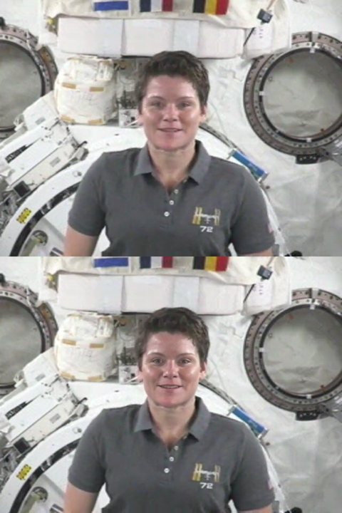

Face Restoration
RestoreFormer++, GFPGAN and CodeFormer on ONNX Runtime, as a VapourSynth pass. 2026-11-08, macOS 27 on an M1 Pro (16 GB). Scripts: scripts/; raw results: data/ (the bench runs, flicker metrics, conversion and pipeline parity records). To reproduce: scripts/make_refs.sh, then scripts/bench.sh, scripts/flicker.py, scripts/tables.py and scripts/make_figures.sh.
ai-runtime add-on, with three model add-ons:
face-restoration (RetinaFace ResNet-50 + BiSeNet + RestoreFormer++, the default, Apache-2.0/MIT),
face-gfpgan and face-codeformer (both non-commercial). The NumPy reimplementation of facexlib's
pipeline matches it to 0.16/255; every pixel outside the faces is bit-exact; a temporal blend in aligned face space cuts
the restored face's frame-to-frame flicker by half (RestoreFormer++, excess over the clean source) to 86% (GFPGAN); RestoreFormer++ runs at 2.2 fps on SD and
1.8 fps at 1080p on Core ML (about 25× slower on the CPU).
1. Licences, read upstream
| Component | Licence (as its LICENSE file states it) | Holder named | Decision |
|---|---|---|---|
| RestoreFormer++ (wzhouxiff/RestoreFormerPlusPlus v1.0.0) | Apache-2.0 | none (template line left unfilled); authors per its citation | default model, base add-on |
| RetinaFace (biubug6/Pytorch_Retinaface; weights as published by facexlib) | MIT | "Copyright (c) 2019", no name | detector, base add-on |
| BiSeNet (zllrunning/face-parsing.PyTorch; facexlib's parsing_bisenet.pth) | MIT | zll, 2019 | face parser, base add-on |
| facexlib (xinntao/facexlib) | MIT | Xintao Wang, 2020 | hosts the weights; alignment template |
| GFPGAN v1.4 (TencentARC/GFPGAN) | Apache-2.0 except third-party code: the StyleGAN2-derived network is under NVIDIA's licence, §3.3 "may be used … non-commercially … research or evaluation purposes only" | THL A29 Limited, a Tencent company, 2021 | own add-on, non-commercial usage note |
| CodeFormer (sczhou/CodeFormer v0.1.0) | S-Lab License 1.0: redistribution and use for non-commercial purposes, with the notice | S-Lab, 2022 | own add-on, non-commercial usage note |
| ParseNet (facexlib's default parser) | derived from PSFRGAN, CC BY-NC-SA | not used | |
| InsightFace / FaceFusion retinaface_10g | non-commercial | not used |
2. Conversion to ONNX
Each model is exported by a committed script (Scripts/models/make_face_restoration.py,
make_face_gfpgan.py, make_face_codeformer.py) from the upstream checkpoint pinned by SHA-256 and
the network source pinned by commit, with the TorchScript exporter at opset 17 / IR 8 (loadable by ONNX Runtime 1.23.2, the
Intel-Mac floor). Shapes are static (detector 640×640, faces 512×512) so Core ML can take whole graphs. Re-running the
script reproduces the files byte for byte (checked for the detector and parser). Parity is ONNX Runtime (CPU) against
PyTorch on the same input, in the networks' own units:
| File | Size | Output | max |Δ| | mean |Δ| |
|---|---|---|---|---|
| face-restoration-retinaface-r50.onnx | 109.1 MB | loc / conf / landmarks | 1.1e-5 / 1.2e-7 / 1.9e-5 | 9.6e-7 / 7.3e-10 / 1.5e-6 |
| face-restoration-bisenet.onnx | 52.6 MB | logits (argmax agrees on 100% of pixels) | 1.2e-5 | 1.4e-6 |
| face-restoration-restoreformerpp.onnx | 295.3 MB | image, [-1, 1] | 2.5e-4 | 2.6e-6 |
| face-gfpgan-v1.4.onnx | 340.4 MB | image, [-1, 1] | 1.2e-5 | 2.6e-7 |
| face-codeformer-v0.1.0.onnx | 376.8 MB | image at w = 0 / 0.5 / 0.7 / 1 | 4.1e-5 / 4.4e-5 / 6.4e-5 / 1.1e-4 | ≤3.2e-6 |
The worst case, 2.5e-4 on a [-1, 1] scale, is 0.03 of an 8-bit level.
Two deliberate departures from upstream inference
- GFPGAN with fixed noise. GFPGANer runs the StyleGAN2 decoder with
randomize_noise=True: fresh random noise on every call, i.e. new texture on every frame of a video. The export uses the generator's fixed noise buffers (part of the checkpoint), which makes the model a pure function of its input. For scale, upstream's random-noise output differs from the fixed-noise one by up to 0.19 (mean 0.0046) on the [-1, 1] scale. - CodeFormer's fidelity
was an input. CodeFormer useswonly in each fusion block'sout = dec + w·(dec·scale + shift), behindif w > 0. The export traces thew > 0branch; atw = 0it adds exactly zero, so one graph is the network at everyw(parity above at four values, including 0 against upstream's skipped branch), where fixed exports would cost 377 MB per offered value.
3. The pipeline without OpenCV
Neither the deps bundle nor the ai-runtime add-on has OpenCV, and nothing needs it: RetinaFace's priors, box/landmark
decoding and NMS, the five-point similarity transform (Umeyama, in place of cv2.estimateAffinePartial2D),
bilinear warps, the Gaussian feathering and the paste-back are NumPy in worker/templates/face_restore.py.
scripts/pipeline_parity.py runs facexlib's PyTorch detect_faces and OpenCV beside it on four frames
of the fixture:
| Step | max difference over 4 frames |
|---|---|
| Box / landmarks (pixels) | 3.1e-5 / 6.1e-5 |
| Detection score | 0 |
| Alignment matrix | 7.1e-5 |
| Aligned 512×512 crop (8-bit levels) | 0.0024 |
| Final frame given the same restored face (8-bit levels) | 0.16 (mean in the face 0.006) |
The pass's mask reaches ~2% fewer pixels than facexlib's (21,112 vs 21,599 on frame 0): values below 1/1024 are cut to exactly zero, so that the blend has a finite reach and everything past it can be left bit-exact (section 6).
4. Detector: ResNet-50, not mobilenet0.25
| ResNet-50 | mobilenet0.25 | |
|---|---|---|
| File | 109 MB | 1.7 MB |
| 640×640 on Core ML / CPU (ms) | 87 / 405 | 6.7 / 16 |
| WIDER FACE val, hard, original scale (upstream README) | 84.4% | 73.8% |
| Faces found ≥ 0.8, SD fixture / 1080p wide shot | 150/150, 90/90 | 150/150, 90/90 |
| Landmark jitter (px, second difference), SD fixture | 0.166 | 0.243 |
| Landmark jitter, 1080p wide shot (face ~125 px) | 0.201 | 0.445 |
Both find this clip's one face in every frame; the difference is in how steadily. Mobilenet's landmarks jitter 1.5–2.2× as much, and jitter is what a restorer turns into a face that swims; on hard faces (small, blurred, turned) the published gap is 10 points. Against that, ResNet-50 costs ~80 ms more per frame on Core ML, which is small beside the restorer's ~300 ms per face — but it is the whole cost of a frame with no face, and on the CPU (Linux) 405 ms. Chosen for quality; and its steadier landmarks show in the restored face too: flick 1.799 against 1.951 with mobilenet (section 5).
5. Temporal stability
A per-frame restorer re-invents fine texture on every frame from noisy input, and a face that is
detected a pixel differently each frame is aligned, and so restored, differently. On a mostly still talking head
(scripts/flicker.py, a fixed rectangle in the middle of the face, 150 frames, luma in 8-bit levels):
- flick = mean |Y[t] − (Y[t−1] + Y[t+1]) / 2|: change from frame to frame that smooth motion does not explain — shimmer, texture that comes and goes, a face that jumps.
- tdiff = mean |Y[t] − Y[t−1]|: all temporal change, motion included.
- vs clean = mean |Y − clean source|: a check that blending neighbours didn't ghost or smear; not a quality score (restorers invent plausible detail, which a pixel metric counts as error — every restorer scores worse than the soft input here).
| Variant | flick | tdiff | vs clean |
|---|---|---|---|
| Clean source, same crop (the floor: real motion) | 1.273 | 2.448 | — |
| Input (degraded fixture) | 1.140 | 1.998 | 5.47 |
| RestoreFormer++, no smoothing | 2.287 | 3.453 | 7.89 |
| RestoreFormer++, landmarks smoothed only (r = 1) | 2.284 | 3.514 | 7.92 |
| RestoreFormer++, landmarks + aligned-space blend (r = 1) | 1.799 | 3.228 | 7.86 |
| RestoreFormer++, landmarks + blend (r = 2) | 1.657 | 3.125 | 7.83 |
| RestoreFormer++, r = 1, strength 0.8 (the default) | 1.571 | 2.878 | 7.13 |
| RestoreFormer++, r = 1, mobilenet0.25 detector | 1.951 | 3.371 | 7.98 |
| GFPGAN, no smoothing | 1.914 | 2.938 | 5.96 |
| GFPGAN, r = 1 | 1.359 | 2.642 | 5.88 |
| CodeFormer (w 0.7), no smoothing | 2.421 | 3.537 | 6.97 |
| CodeFormer (w 0.7), r = 1 | 1.789 | 3.158 | 6.87 |
Correction, found during the work. The brief's minimum — smoothing landmarks over n−1, n, n+1 — was built first and changed nothing measurable here: flick 2.287 → 2.284. On this clip the detector is already steady (landmark jitter 0.17 px), so the restorer's own per-frame texture is the whole problem. That is what led to the second step, which is what the pass ships: each restored face is averaged with the restored faces it matches in the neighbouring frames, in the aligned 512×512 space where they line up, weighted down to nothing wherever the input crops differ by more than 15 levels (a moving mouth or eye keeps its own frame). Landmark smoothing stays: it costs nothing and matters where detection is less steady than here (the mobilenet row: flick 1.951 against 1.799 with ResNet-50's steadier landmarks).
The blend cuts RestoreFormer++'s excess flicker (above the clean source's 1.273) by half at r = 1 (2.287 → 1.799) and GFPGAN's by 86% (1.914 → 1.359), with "vs clean" unchanged or lower, i.e. no ghosting the metric can see. r = 2 gains another 0.14 but reads four frames either side for the preview and widens the window over which a turning head is averaged; r = 1 ships. Strength 0.8 (the default) keeps a fifth of the real face's texture and takes flicker to 1.571. Limits: one clip of one mostly still face; no measurement of fast motion, turning heads or scene cuts, where the motion weight is what stops ghosting and is untested beyond this clip.

6. Bit-exact outside the faces
The pass converts the frame to float RGB (the source's matrix and range), restores and pastes the faces there, converts
back, and composites with std.MaskedMerge in the source's own format using the face mask (luma-sized,
first_plane=True, so 4:2:0 chroma takes it resampled). Wherever the mask is zero — everything outside the
feathered faces, and every frame without one — the output is the input. integration_face_restore_test.dart
compares a lossless encode with the pass on against one with it off, sample by sample in every plane:
| Case (16 frames, FFV1) | Face mean |Δ| (8-bit levels) | Samples changed outside the face box |
|---|---|---|
| RestoreFormer++, defaults, 8-bit 4:2:0 | 4.70 | 0 |
| Strength 0 | 0 | 0 |
| GFPGAN, smoothing on | 2.92 | 0 |
| CodeFormer, smoothing on / off | 3.59 / 3.65 | 0 / 0 |
| RestoreFormer++, 10-bit 4:2:0 source (stays 10-bit) | 4.68 | 0 |
The "face box" is generous (x 190–430, y 70–370 of 640×480, about half the face's size added on every side), because the feathered mask reaches past the face and the head moves; the test proves nothing changed outside it, not where exactly inside it the change stops. Preview against encode at two frames: mean |Δ| 0.0 (identical).
7. Speed and providers
One face in every frame, scripts/face_run.py in the deps bundle's Python (the code the
generated script runs), M1 Pro, smoothing on. Other agents' jobs shared the GPU during parts of this session; these
runs were made with no other VapourSynth process running, but the numbers are one sample each.
| Run | Size | Frames | fps | Setup (s) | Note |
|---|---|---|---|---|---|
| RestoreFormer++, Core ML | 640x480 | 60 | 2.15 | 3.4 | |
| RestoreFormer++, Core ML | 1920x1080 | 60 | 1.84 | 3.4 | detection on a 640 copy; conversions and paste-back at 1080p |
| RestoreFormer++, CPU (VAPOURBOX_AI_FORCE_CPU=1) | 640x480 | 12 | 0.09 | 0.3 | |
| RestoreFormer++, CPU | 1920x1080 | 12 | 0.07 | 0.3 | |
| GFPGAN, Core ML | 640x480 | 60 | 0.80 | 4.6 | |
| CodeFormer, Core ML | 640x480 | 60 | 0.36 | 49.2 | setup includes Core ML compiling the model |
Core ML runs RestoreFormer++ about 25× faster than the CPU. The cost is per face, so a
frame with two faces takes about twice as long, and 1080p costs little more than SD (the face is restored at 512×512
either way). Per-model latency on this Mac (Scripts/models/face_provider_bench.py, one 512² face or one 640²
detection, after warm-up):
| Model | Core ML (ms) | CPU (ms) | Core ML vs CPU max |Δ| | Core ML session (s) |
|---|---|---|---|---|
| RetinaFace R50 | 87 | 405 | 1.4e-5 | 2.1 |
| BiSeNet | 33 | 98 | 1.0e-5 | 0.5 |
| RestoreFormer++ | 293 | 6,775 | 1.9e-4 | 5.6 |
| GFPGAN v1.4 | 639 | 2,012 | 8.2e-6 | 7.9 |
| CodeFormer | 677 | 6,095 | 7.2e-5 | 46 (30 with CPUAndGPU units) |
Linux has only the CPU provider, so there a minute of SD video with a face throughout takes on the order of 5.9 hours; Windows uses DirectML (untested here).
8. What wasn't tested
- Windows (DirectML), Linux (CPU), macOS x64: only macOS arm64 was run. The models are plain opset-17
graphs and ran on ONNX Runtime's CPU provider here, but DirectML's operator coverage for the transformer models
(RestoreFormer++, CodeFormer) is unverified; a failure there falls back to the CPU at session creation, or at the first run
(
ai_runtime.Runner). - TensorRT/CUDA: hooks only, as for every ai-runtime pass.
- One clip, one face, frontal, mostly still. Crowds, profiles, occlusion, scene cuts across a face, and faces smaller than ~60 px at 640 were not measured.
- Faithfulness: a restorer invents plausible detail. No metric here says the restored face is the person; Strength is the user's control for that.
9. Decisions
- Pass position: after Crop & Resize, before Sharpen. Faces are restored at the delivered resolution (an upscale gives the restorer more pixels per face; nothing resamples the result afterwards); sharpening before would sharpen a face that is then replaced; grain after puts texture back over the smooth result.
- RestoreFormer++ as the default — the only one of the three with a clean licence.
- BiSeNet, not ParseNet (licence), with facexlib's classes for the face (skin, brows, eyes, glasses, ears, nose, mouth, lips) and its feathering.
- CodeFormer
was a graph input (section 2). - Static shapes, the detector fed a padded 640 square: Core ML takes static graphs whole.
- Runs serialised per pass (
ai_runtime.Runner, one lock for the three models) with a CPU retry: two jobs' worth of concurrent Core ML predictions ran the GPU out of memory (kIOGPUCommandBufferCallbackErrorOutOfMemory). - Default strength 0.8, smoothing on (section 5).
- No Core ML model cache. ONNX Runtime's
ModelCacheDirectorycut RestoreFormer++'s session creation but the second session from the cache failed (output_features has no value), so each job compiles: RestoreFormer++ 2–6 s, GFPGAN 2–8 s, CodeFormer 30–50 s.